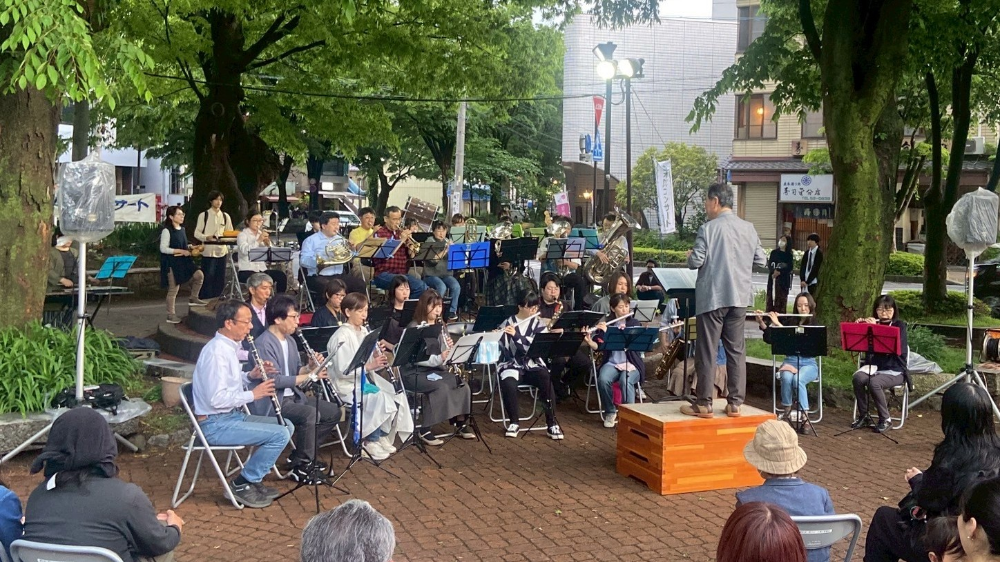

コンサート情報
諏訪市民吹奏楽団の今後の演奏予定です。（詳細が決まり次第、随時更新します）
いずれの演奏も入場無料です。お気軽にお越しください。
2025年 ｜ 2024年 ｜ 2023年 ｜ 2022年
2021年 ｜ 2020年 ｜ 2019年 ｜ 2018年 ｜ 2017年
2016年 ｜ 2015年 ｜ 2014年 ｜ 2013年 ｜ 2012年
2011年 ｜ 2010年 ｜ 2009年 ｜ 2008年 ｜ ｜ 2007年
2006年 ｜ 2005年 ｜ 2004年 ｜ 2003年 ｜ 2002年
聖母寮 慰問演奏
日時: 2025年7月26日（土）
※関係者の方のみご来場いただけます。
第31回上社の杜音楽祭
日時: 2025年10月下旬予定
場所: 諏訪市博物館前「美しき広場」
会場地図はこちら
第31回定期演奏会
日時: 2025年12月7日（日） 午後2:00開演予定
場所: 茅野市民館マルチホール
会場地図はこちら
昨年第30回の節目を迎え、さらにグレードアップした演奏会を準備中です。ご期待ください！
並木DEコンサート 演奏終了（2025.5.17）
今年度１回目の「並木DEコンサート」に、本年も出演させていただきました。当日は朝から断続的に雨で実施が危ぶまれたのですが、何とか夕方には雨も上がり、最近のヒット曲から元気の出る洋楽まで盛り込んだ、予定通りのプログラムで演奏することができました。多くのお客様にご来場いただき、一緒に音楽を楽しむことができたこと、心より深く御礼申し上げます。また実行委員会の皆様にも大変お世話になりました。ありがとうございました。